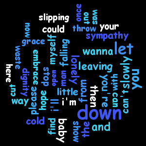

This word cloud shows the word frequency used in the song "Let me down slowly".
This website is for my assignment 3 of CISC 3130.
The most frequent used word is down, which is the one I expected. However, the total unique words used in this song are just 90, which I think is kind of small amount.
It was generated by:
- HashMap is the data structure used to find the word frequency.
- Java is the programming language used.
- Kumo library is used to create word cloud image.
By Romer Chia